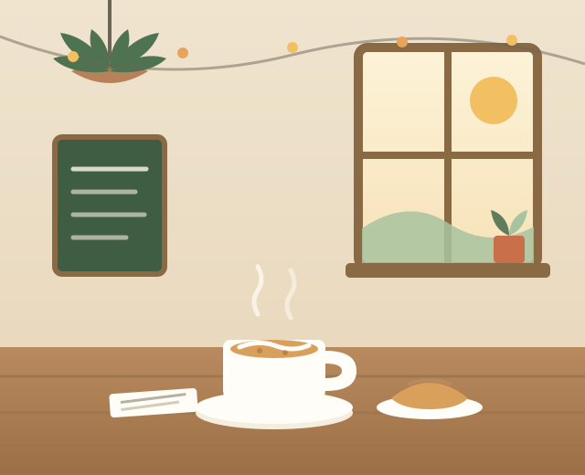

Your neighborhood corner cafe
Slow mornings, warm cups, good company.
Little Fern pours small-batch coffee, bakes pastries before sunrise, and keeps a comfy seat by the window with your name on it.
☕ Open daily from 7am · 42 Maple Street

Opening Hours
The coffee is on the second the doors open.
- Monday – Friday
- 7:00 am – 5:00 pm
- Saturday
- 8:00 am – 5:00 pm
- Sunday
- 8:00 am – 3:00 pm
Kitchen closes 45 minutes before we do. Closed on major holidays.
Find Us
Tucked between the bookshop and the flower stand.
Little Fern Cafe
42 Maple StreetCorner of Maple & 3rd
Portland, ME 04101
How to spot us
Look for the sage-green storefront with the big fern hanging by the door, one block up from the river. Street parking is easy before 8am and after 3pm; the Elm Street garage is a two-minute walk. We're right on the 4 and 7 bus lines, and there's a bike rack out front.
🐶 Well-behaved dogs are welcome on the patio — water bowls provided.